인스타 화자 시안판
지기는 보이지 않는다 — 보는 사람이 지기의 눈이 된다
샐리의 10/5 방향 — 클럽은 밤에만 여는 곳이 아니라 창작자들이 하루 종일 자유롭게 드나드는 라운지이고, 화자는 그 공간을 지키며 묵묵히 응원하는 존재다. 그래서 2라운드는 라운지 지기와 시간대별 라운지를 그렸다. 공식 계정에서 말하는 존재를 '클럽 사장님(사람)'이 아니라 그림으로 그린 비사람 캐릭터 1명으로 두고, 주인공은 매주 실제 멤버의 이름과 크레딧으로 세우는 구조입니다. 아래는 그 느낌을 보기 위한 러프 시안 9장과, 결정 전에 확인한 미확인 5건의 결과입니다.
그림체
거친 펜 선 · 무표정 · 느슨한 자세 · 초록 포인트 하나. 9/10 톤앤매너 가이드 그대로.
캐릭터가 하는 일
불을 켜 두고, 찻잔을 닦고, 따뜻한 그릇을 내려놓는다. 말을 걸지 않고 멀리서 본다.
오늘 정할 것
규칙 세 줄로 첫 10편을 쓸지. 캐릭터 라운드는 여기서 끝납니다.
결론 · POV 지기 샐리(10/5): "캐릭터 대신 손만 잠시, 일부만. 보는 사람은 지기의 눈으로 본다. 사람인지 동물인지 궁금하게. 단서는 살짝, 설정은 심플하게." 이 한 마디가 네 라운드의 매듭을 풀었습니다.
곰이 C8과 어울리는지는 더 묻지 않아도 됩니다 — 지기의 정체를 정하지 않기 때문입니다. 그림 일관성·AI 라벨·기존 캐릭터와 겹침 걱정이 함께 사라지고, 주인공은 늘 화면 안의 실제 멤버, 보는 사람은 그 멤버를 마주 보는 자리에 앉습니다. 라운지는 가상 공간이 아니라 카메라가 놓인 자리입니다.
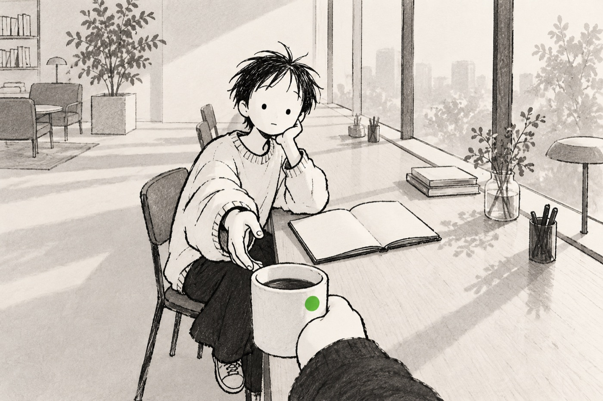
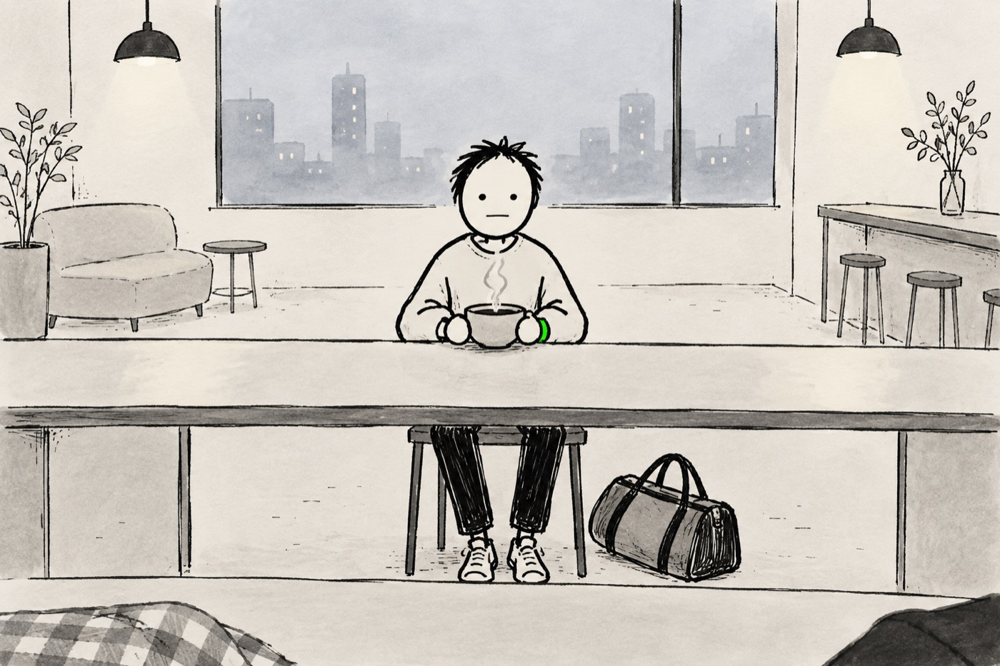
규칙 세 줄 — 이 이상 설정하지 않습니다
① 카메라는 늘 지기의 눈높이. 지기는 화면에 안 나오고, 화면 속 멤버는 카메라(지기)를 봅니다.
② 한 게시물에 지기의 일부는 많아야 한 번, 살짝 — 컵을 쥔 큰 손, 소매 끝, 담요 자락, 그림자. 사람인지 동물인지 알 수 없게. 없어도 됩니다.
③ 캡션은 지기의 영업일지 한 줄, C8 톤 그대로 — 짧고 당당하게, 과한 친절 없이. "09:30 아무도 안 옴. 불은 켜 둠."
정체는 우리도 정하지 않습니다. 정하면 설명하게 되고, 설명하면 세계관이 됩니다. 단서 목록을 미리 만들지 않고 매 편에 하나 넣을지 말지만 정합니다. 댓글의 추측("곰이죠?" "사람 손인데?")이 콘텐츠가 됩니다. 아래 1~4라운드는 여기까지 오는 데 쓴 참고 자료입니다.
4라운드(참고) · 왜 사랑받나, 그리고 곰의 딱 하나 다른 것 샐리 "와닿는 게 없다, 재미없다 — 햄찌는 외형·몸짓·말투 삼박자가 맞아서 귀엽다". 사랑받는 이유를 리서치로 다시 세우고, 곰에게 그 '하나'를 붙였습니다.
진단. 사랑받는 이유 7축(형태·몸짓·말투·내면·관계·반복·시대 공명)에서 지금 곰은 몸짓 1점·말투 1점·내면 0점이었습니다. 말 없고 무표정하고 따뜻한 곰은 LINE 브라운이 이미 차지한 '평범' 칸입니다("Silent but has a warm heart. His expressionless face is charming"). 햄찌의 다름은 외형이 아니라 순한 겉 vs 거친 속의 낙차가 말투로 새어 나오는 것(욕·일부러 틀린 철자·"~햄니다")이었습니다. 스누피(말 못 하는데 생각 풍선은 수다), 리락쿠마(곰인데 등에 지퍼), 구데타마(음식인데 먹히기 거부)도 같은 구조입니다. 즉 다름은 결핍에서 나오고 말투로 드러납니다.
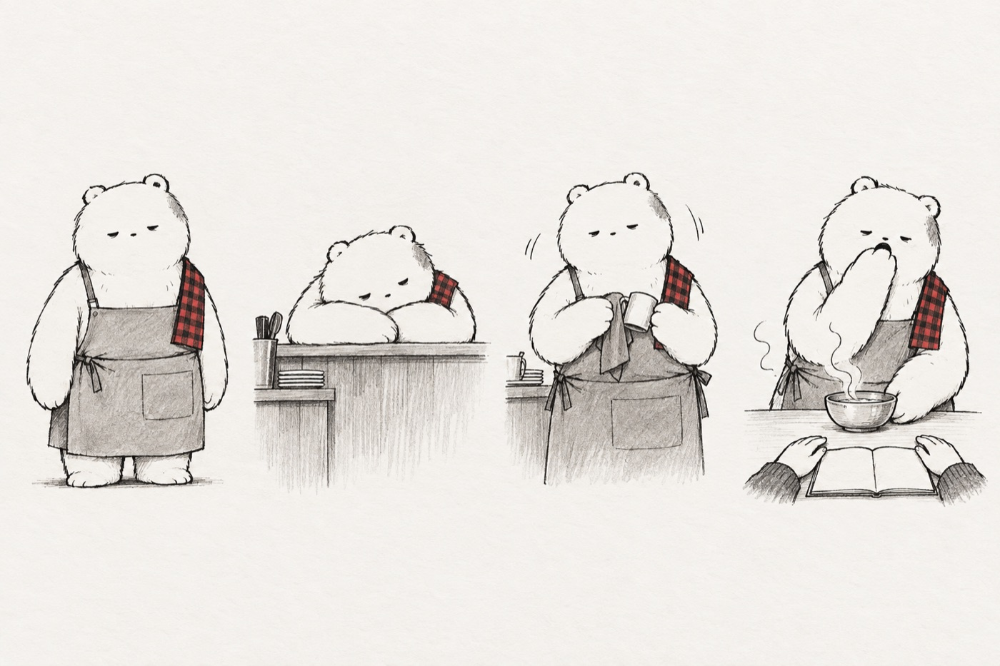
- 다름
- 곰이라 겨울이면 넉 달을 자야 하는데, 라운지가 24시간 열려 있어서 태어나 한 번도 겨울잠을 못 잤다. 불을 켜 두는 이유가 곧 결핍이고, 결핍이 곧 따뜻함이다. '겨울잠'이라는 말은 캡션에 안 쓴다 — 하품·담요·첫눈으로만 비친다.
- 외형
- 눈꺼풀 늘 반쯤. 머리 한쪽 털이 눌려 있음. 어깨에 늘 같은 빨간 체크 담요 — AI 그림의 일관성은 이 담요 하나로 버틴다.
- 몸짓
- 카운터에 턱 괴고 꾸벅 졸다가 문 종소리에 벌떡, 아무 일 없던 척 잔을 닦는다. 하품을 가린 앞발 그대로 그릇을 내려놓는다.
- 말투
- 캡션은 시각 + 본 것. 끝줄은 늘 「아직 안 잠.」 새벽 3시가 넘으면 오타가 한 글자 생긴다(햄찌의 틀린 철자와 같은 장치).
- 이름
- 꾸벅 — 조는 동작이자 소리. 토토로처럼 소리가 이름.
꾸벅의 첫 10편 — 그림 없이 이것만 읽어도 곰이 보이는지가 시험입니다
월 07:12 — 창가 자리. 또 그 사람. 컵 세 번째. 아직 안 잠.
월 13:20 — 긴 테이블에 모니터 넷. 아무도 말 안 함. 다 같이 있음. 아직 안 잠.
화 19:40 — 두 번째 곡에서 세 번 멈춤. 네 번째엔 끝까지. 드럼이 먼저 웃음. 아직 안 잠.
수 00:50 — 같은 여덟 마디, 서른한 번. 램프 하나만. 아직 안 잠.
수 03:40 — 작곡가 퇴장. 그르 하나 치움. 아직 안 잠.
목 04:10 — 가방은 바닥에, 두 손은 그릇에. 국 한 번 더. 아직 안 잠.
금 05:55 — 댄서 퇴장. 종소리에 벌떡. 잔 닦는 중이었음. 원래. 안 잠.
토 18:05 — 낮 사람이 저녁 사람한테 의자 넘김. 둘은 모르는 사이. 였다. 아직 안 잠.
일 09:30 — 아무도 안 옴. 불은 켜 둠. 담요 고쳐 맴. ……안 잠.
첫눈 — 댄서 몫 우유 데움. 창문에 붙어 봄. 아직 안 잠.
대안 · 톡 — 발끝으로 걷는데 쿵 하는 곰
가장 조용해야 하는 자리에 가장 큰 몸. 매 캡션에 효과음 괄호 하나, 사과 금지. "02:00 밴드 넷. 발끝으로 그릇 넷. (쿵)(쿵)(쿵)(쿵)" / "05:30 댄서 혼자. 숨 참고 내려놨다. (톡) 됐다." '재미없다'에는 이 안의 "애쓰다 무너지는" 개그가 더 직접 답합니다. 다만 큰 곰의 까치발은 AI 그림이 매번 같게 못 뽑고, 창작자 옆에서 소리를 내는 곰은 '방해하는 곰'으로 읽힐 수 있습니다.
그 밖의 후보 여덟 — 손이 너무 커서 찻잔을 두 손으로 드는 곰(「깬 것: 0」) · 얼굴은 무표정인데 귀만 솔직한 곰 · 등만 보이는 수줍은 곰 · 쓰고 취소선으로 지우는 곰 · 또 데우는 곰(N번째) · '응'만 하는 곰 · 발소리 없는 곰 · 「아직 안 잠」 끝말 곰(꾸벅에 합쳐짐). 취소선은 인스타 캡션이 지원하지 않아, 귀 3상태·까치발은 AI 그림이 매번 같게 못 뽑아 감점됐습니다.
3라운드(참고) · 더 귀여운 지기 후보 열 왜가리·조명은 접었습니다. 발상 25안을 샐리 눈·디자이너 눈·창작자 눈 셋이 채점하고 기존 캐릭터와 겹치는지 확인한 뒤, 상위 9안과 추가 1안을 같은 그림체(둥글고 작고 무표정)로 그렸습니다. 역할은 전부 같습니다 — 불을 켜 두고, 찻잔을 닦고, 말을 걸지 않는다.
세 심사위원이 공통으로 꼽은 상위 셋: 밤송이(고슴도치) · 가루(지우개 가루) · 여덟이(문어). 심사평 요지 — 1·2라운드가 별로였던 공통점은 "키 크고 차갑게 내려보는 것"이었고, 이번엔 "작고 둥글고 발치에 있으며 조용히 한 가지 일을 하는" 안들이 살아남았다. 사물(주전자·시계·담요·밥솥)은 설정이 좋아도 같은 이유로 다시 거부될 가능성이 커 뺐다.
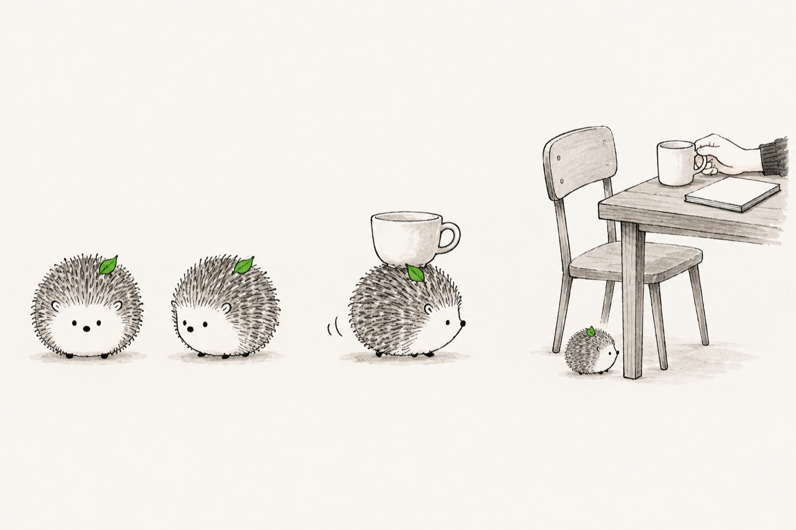
- 설정
- 손바닥만 한 공. 가까이 오지 않는 거리 자체가 배려인 지기.
- 하는 일
- 작업하는 사람 발치에 말려 있다가, 자리를 뜨면 식은 찻잔을 등에 얹어 옮긴다.
- 메모
- IP: 낮음 — 직접 겹침 없음(확인 범위 내). 참고: 소닉(파란 의인화 고슴도치, https://en.wikipedia.org/wiki/Sonic_the_Hedgehog_(c
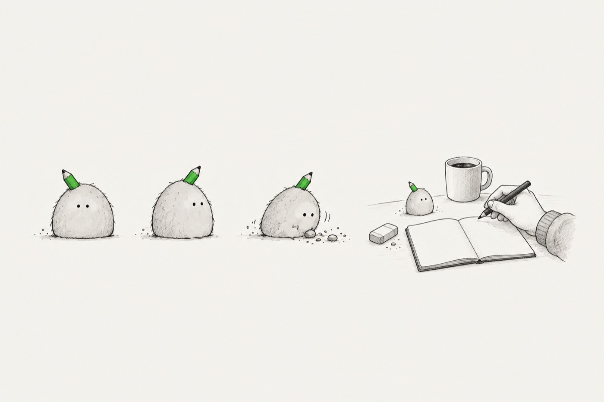
- 설정
- 지우고 고친 흔적이 뭉쳐 생긴 존재. 멤버들이 바쁜 주엔 조금 통통해진다.
- 하는 일
- 밤새 바닥을 돌며 부스러기를 제 몸에 붙인다 — 그게 곧 라운지 정리.
- 메모
- IP: 중 — 지브리 마쿠로쿠로스케(Susuwatari, 센과 치히로/토토로) — 골프공 크기, 새까맣고 보송한 털, 큰 눈 두 개, 가늘고 긴 팔다리. https://en.w
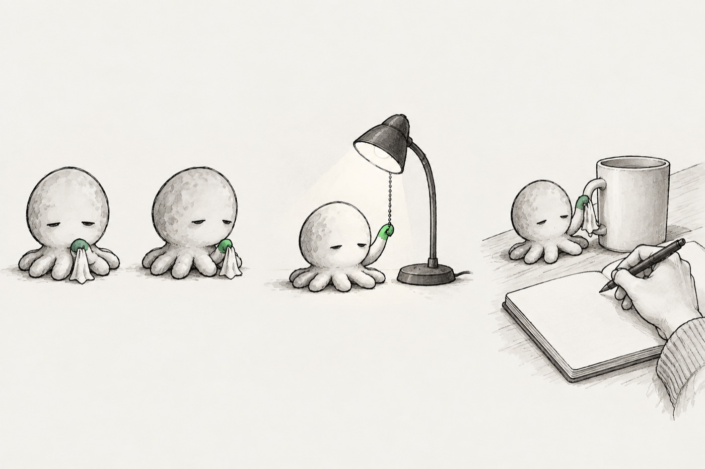
- 설정
- 다리 일곱은 늘어져 있고 초록 다리 하나만 일한다. Cre8의 8.
- 하는 일
- 한 다리로 램프 줄을 당기고, 다른 다리로 찻잔을 닦는다.
- 메모
- IP: 낮음 — 즉시 겹치는 유명 IP 없음(확인 범위 내). 문어는 산리오·카카오·라인 대표군에 없음(https://en.wikipedia.org/wiki/Hello_Kitty
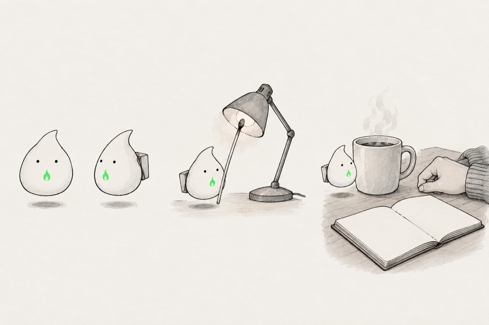
- 설정
- 사물도 생물도 아닌 '불빛 그 자체'. 24시간 꺼지지 않는 이유.
- 하는 일
- 성냥 하나를 지팡이처럼 들고 램프 안에 들어가 켠다.
- 메모
- IP: 중 — (1) 캘시퍼(하울의 움직이는 성 불의 악마, https://en.wikipedia.org/wiki/Howl%27s_Moving_Castle_(film)) — 눈
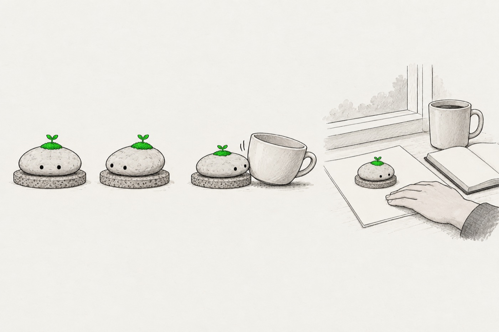
- 설정
- 라운지가 생기기 전부터 창틀에 있던 돌. 하루에 2cm만 움직인다.
- 하는 일
- 빈 찻잔을 몸으로 밀어 두고, 원고의 문진 노릇을 한다.
- 메모
- IP: 낮음 — 직접 겹치는 캐릭터 없음(확인 범위 내). 참고: Pet Rock(1975 미국 장난감 돌, https://en.wikipedia.org/wiki/Pet_Rock
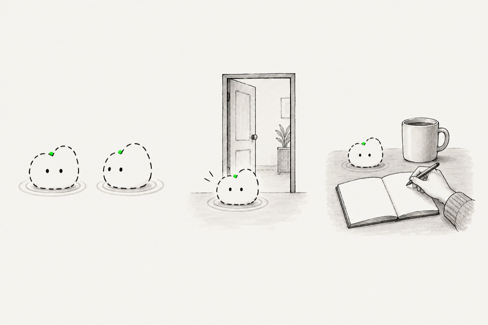
- 설정
- 문을 잠그지 않는 라운지에서 '와도 돼'를 두 번 두드려 알리는 소리.
- 하는 일
- 들어오는 사람 앞에서 바닥을 두 번 두드린다. 집중한 사람 옆에선 소리를 참는다.
- 메모
- IP: 낮음 — 없음(검색 범위 내). 흰 둥근 몸+점눈은 먼작귀 치이카와(쥐·햄스터형, 둥근 귀·물방울 꼬리, https://en.wikipedia.org/wiki/Chiika
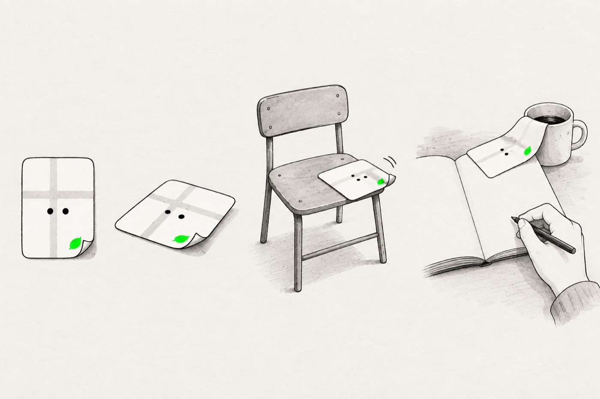
- 설정
- 사람이 앉을 자리를 먼저 데워 두는 빛. 밤엔 달빛 조각.
- 하는 일
- 사람이 오면 자리를 비켜 옆으로 스르륵 미끄러진다.
- 메모
- IP: 낮음 — 없음(검색 범위 내). '창살 그림자가 든 빛 조각'을 캐릭터화한 사례 미확인. 흰 네모+점눈 자체는 '종이·포스트잇 캐릭터'(스티키노트 캐릭터류)와 넓게 닿을
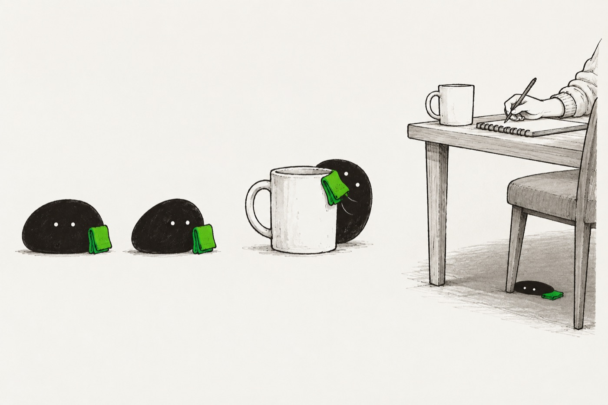
- 설정
- 빛이 있는 곳에만 생기는 그림자라 늘 멤버 뒤에 선다.
- 하는 일
- 초록 행주로 컵을 닦으며 컵 뒤에 반쯤 숨는다.
- 메모
- IP: 중 — (1) 킹덤하츠 '섀도 하트리스'(검은 실루엣·노란 눈, https://en.wikipedia.org/wiki/Heartless_(Kingdom_Hearts)),
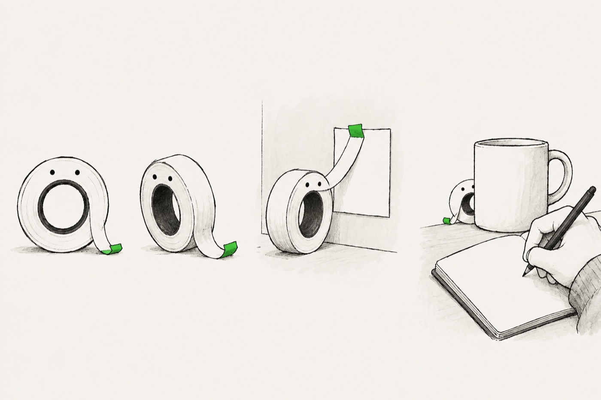
- 설정
- 멤버의 작업을 말 대신 벽에 붙여 두는 지기. 떼어도 자국이 안 남는다.
- 하는 일
- 가사 메모 한 장을 주워 벽 구석에 붙인다.
- 메모
- IP: 없음 — 없음(검색 범위 내). 테이프 롤 자체를 캐릭터화한 유명 IP는 확인되지 않음. 일본 mt(카모이) 마스킹테이프는 브랜드이지 마스코트가 없음(미확인·지식 기반).
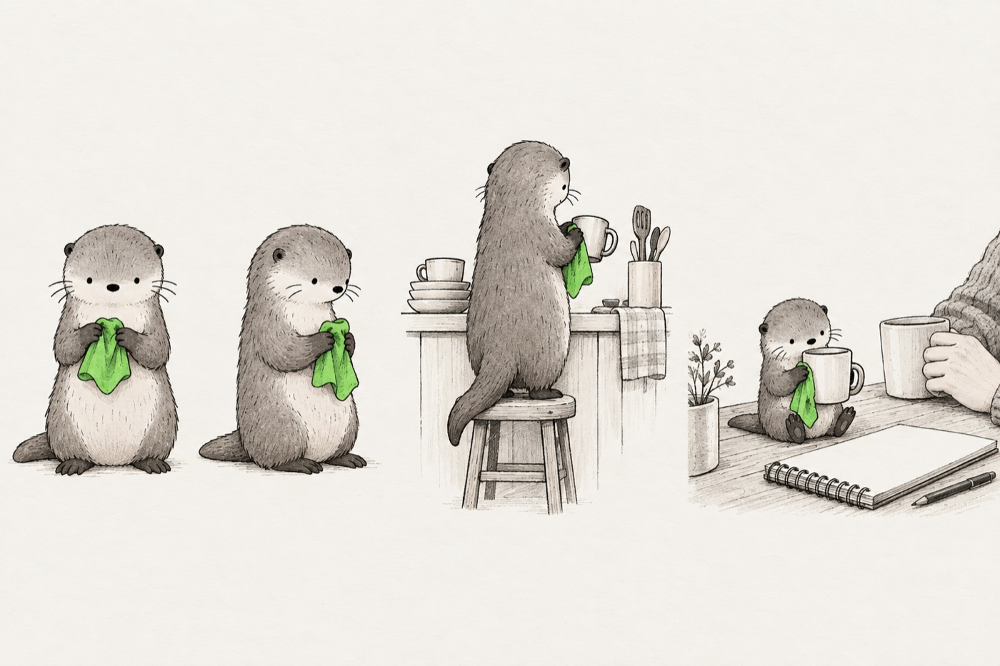
- 설정
- 손이 있어 컵을 닦을 수 있는 작은 생물. 바쁘지만 조용하다.
- 하는 일
- 카운터 스툴 위에서 등을 반쯤 돌리고 컵을 닦는다.
- 메모
- 심사 밖 — 작은 야행성 생물 축에서 손이 있는 후보로 추가. 수달 캐릭터는 시장에 많아 신선도 확인 필요.
2라운드(참고) · 라운지 지기 후보 셋 문지기·출입증·간판은 뒤로 보냈습니다. 자유롭게 드나드는 공간에 거르는 사람은 없고, 남는 역할은 "지키는 사람" 하나입니다.
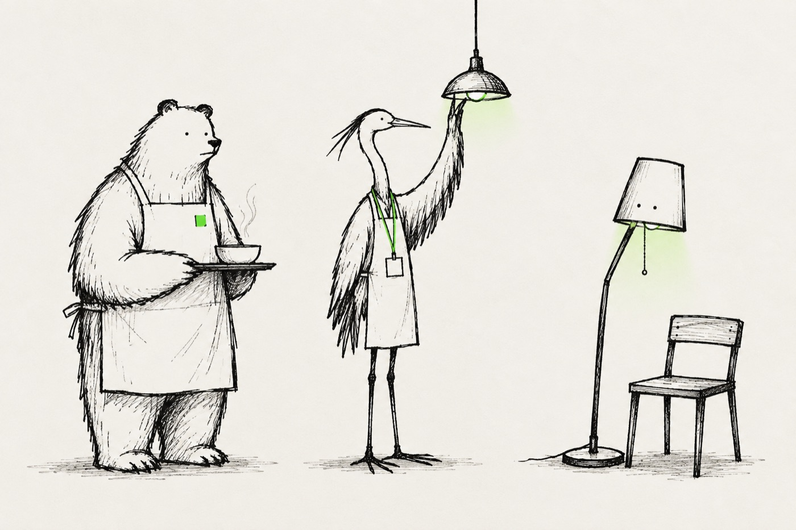
- 곰
- 1라운드에서 가장 얼굴이 남은 후보. 느릿하고 크고 따뜻해서 "새벽의 한 끼"와 어울린다. 덩치 때문에 멀리 있어도 보인다.
- 왜가리
- 키가 커서 "멀리서 내려다보는" 느낌이 산다. 조명을 켜 주는 동작이 자연스럽다. 차가워 보일 수 있다.
- 조명
- "불을 켜 두는 존재"라는 뜻이 가장 정확하다. 대신 가장 추상적이라 정이 늦게 붙는다.
2라운드 · 같은 라운지, 네 개의 시간(방향 확정) 공간은 하나인데 빛과 사람이 바뀝니다. 장면 속 곰은 자리 표시용이고, 3라운드에서 고른 지기로 바뀝니다.
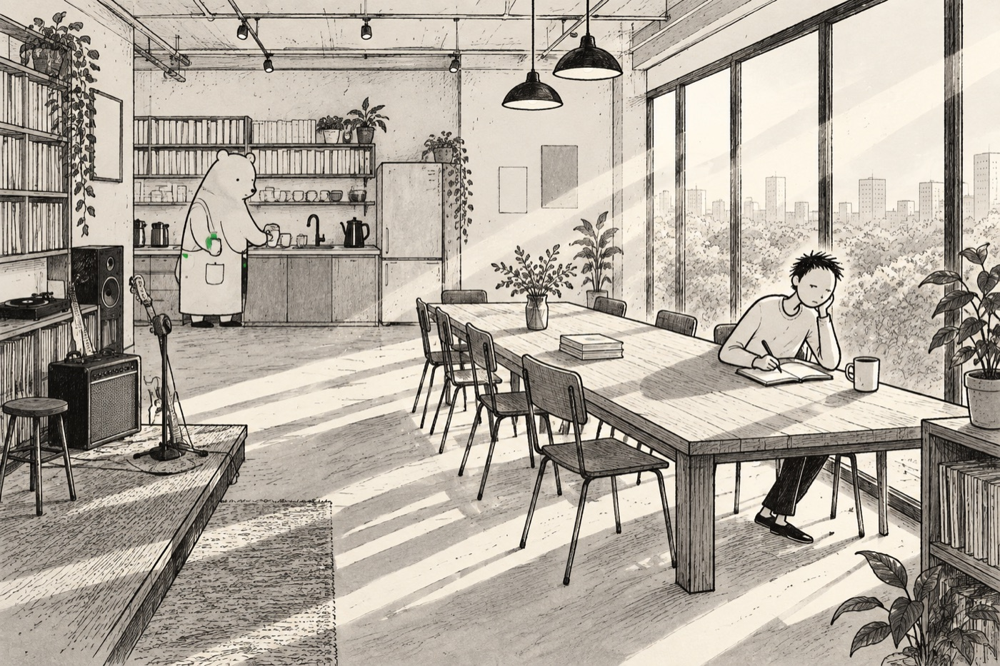
- 지기
- 멀찍이 컵을 닦는다. 말을 걸지 않는다.
- 캡션 예
- "7시 12분. 창가 자리는 늘 같은 사람이 먼저 온다."
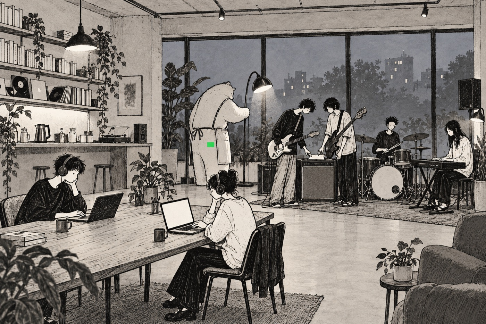
- 지기
- 무대 쪽 조명을 살짝 돌려 주고 돌아선다.
- 캡션 예
- "오늘 두 번째 곡은 세 번 멈췄다. 네 번째엔 끝까지 갔다."
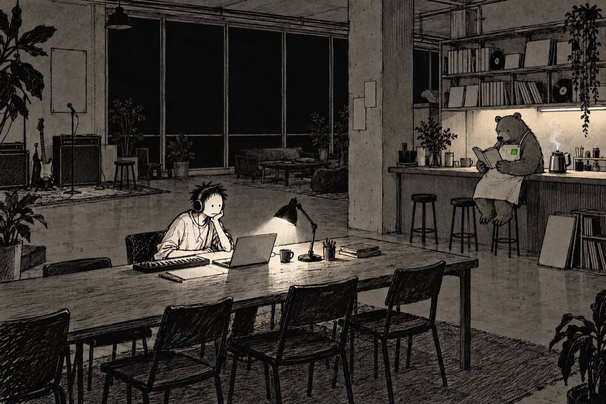
- 지기
- 카운터 끝에서 책을 읽는다. 주전자만 끓는다.
- 캡션 예
- "12시 40분. 같은 여덟 마디를 서른 번 들었다."
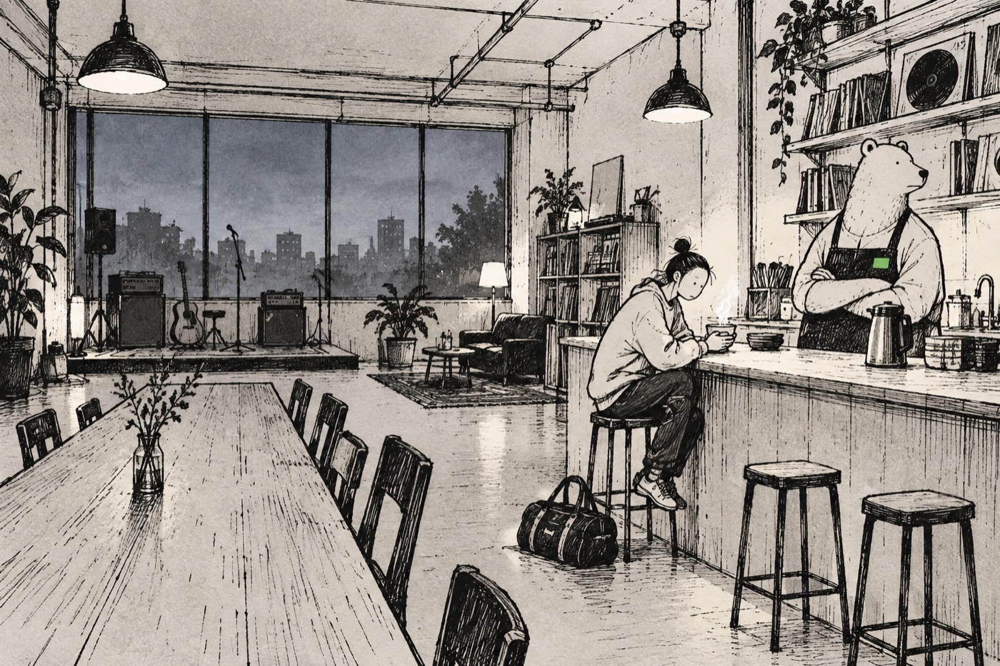
- 지기
- 그릇을 내려놓고 한 발 물러서 창밖을 본다.
- 캡션 예
- "4시 10분. 가방은 바닥에, 두 손은 그릇에."
교대 시간(저녁 밴드가 들어오고 낮 디자이너가 나가는 때)이 서로 다른 분야가 마주치는 자리라, 「둘이 같이 하면 뭐 나오지?」는 여기서 자연스럽게 생깁니다.
1라운드(참고) · 역할 후보 다섯 같은 그림체, 다른 '하는 일'. 캐릭터는 각 시트에서 한 명만 고르면 됩니다.
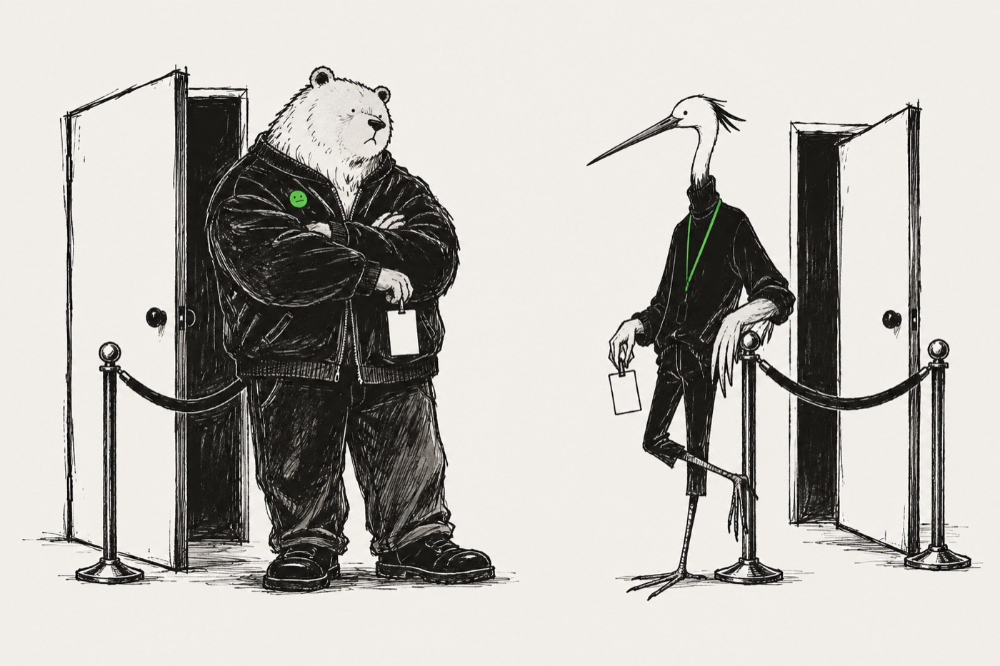
- 하는 일
- 문 앞에 서 있다가 이번 주 들어온 사람 이름을 부른다.
- 강점
- "겸손은 여기서 안 통합니다"·무표정·팔짱이 원래 문 앞 말투. 가장 기억에 남는 얼굴.
- 위험
- '입뺀'이 일상어라 "불리지 않은 사람은 걸러졌다"로 읽힐 수 있다. 막는 동작 없이 맞이하는 연출로만 쓴다.
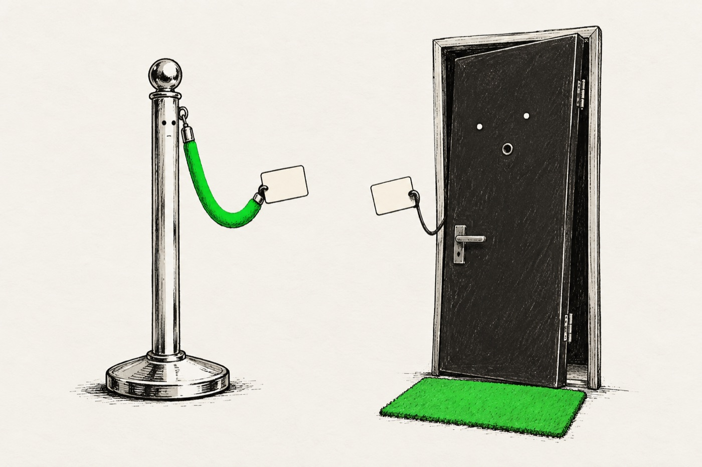
- 하는 일
- 문 앞 사물이 카드를 내민다.
- 강점
- 사람도 동물도 아니라 가장 중립. 제작이 가장 단순.
- 위험
- 표정·동작 폭이 좁아 시리즈가 단조로워질 수 있다.
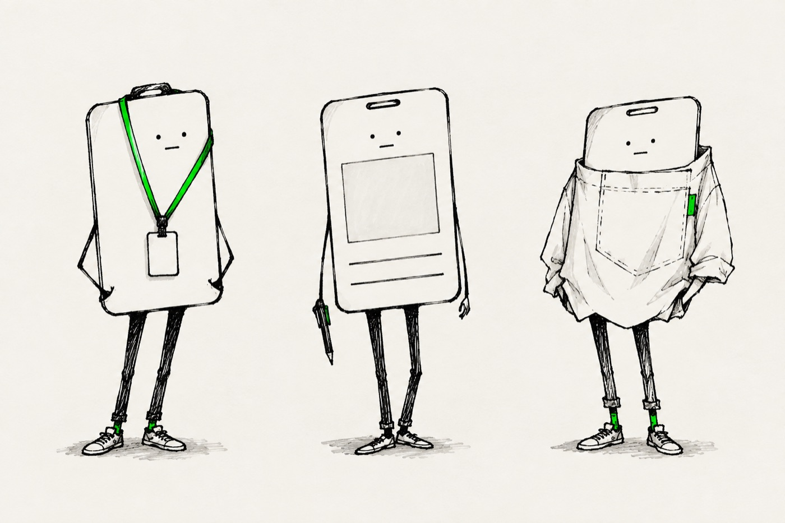
- 하는 일
- 이번 주 새로 발급된 카드의 이름·직업 칸을 보여 준다.
- 강점
- 01편 「직업 칸 오류」와 바로 이어진다. 발급은 환영이라 위축이 없다. 멤버십 읽기(민음사 북클럽·KB 유스 클럽)와 같은 결.
- 위험
- 사물이라 정이 덜 붙을 수 있다. 같은 유형 선례를 못 찾았다.
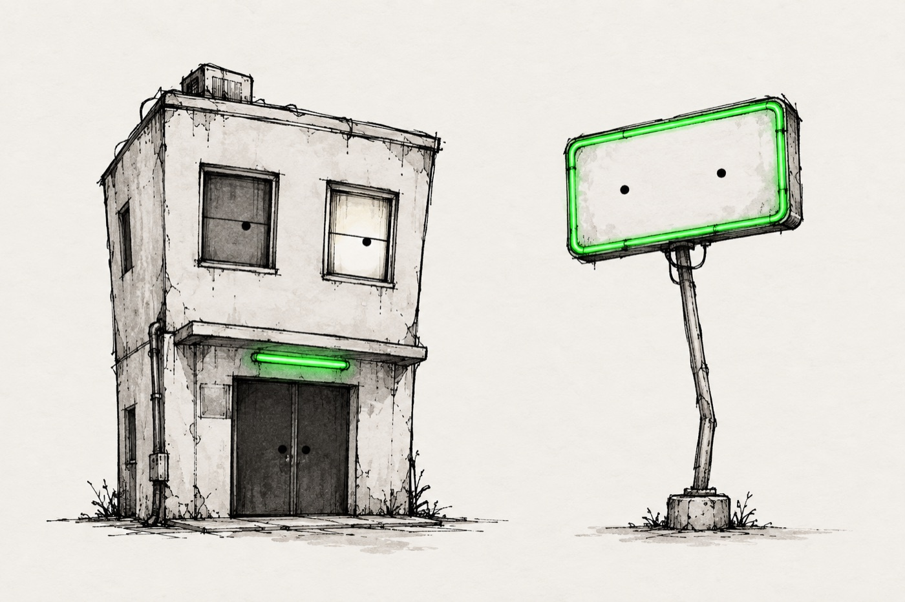
- 하는 일
- 불이 켜지고 누가 들어왔는지 말한다.
- 강점
- 공간이 화자라 사람 의존 0. 네온이 브랜드 그린과 잘 붙는다.
- 위험
- 할 일이 비어 있어 기억에 남기 어렵다. 게시물에서 움직임을 주기 힘들다.
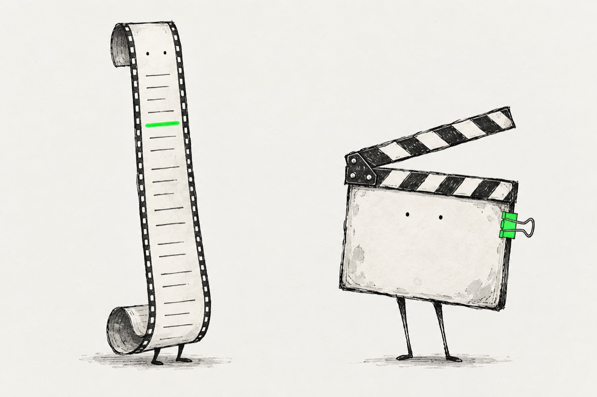
- 하는 일
- 엔딩크레딧처럼 이름을 올려 준다.
- 강점
- "만드는 사람은 만든 사람을 본다"와 직결. 영상 직군에게 바로 읽힌다.
- 위험
- 영상 쪽에 치우쳐 보일 수 있다. 글자가 화자라 정이 덜 붙을 수 있다.
게시물로 보면 같은 일("이번 주 들어온 사람 소개")을 세 역할이 각각 하면 이렇게 보입니다. 위쪽 여백에 캡션이 들어갑니다.
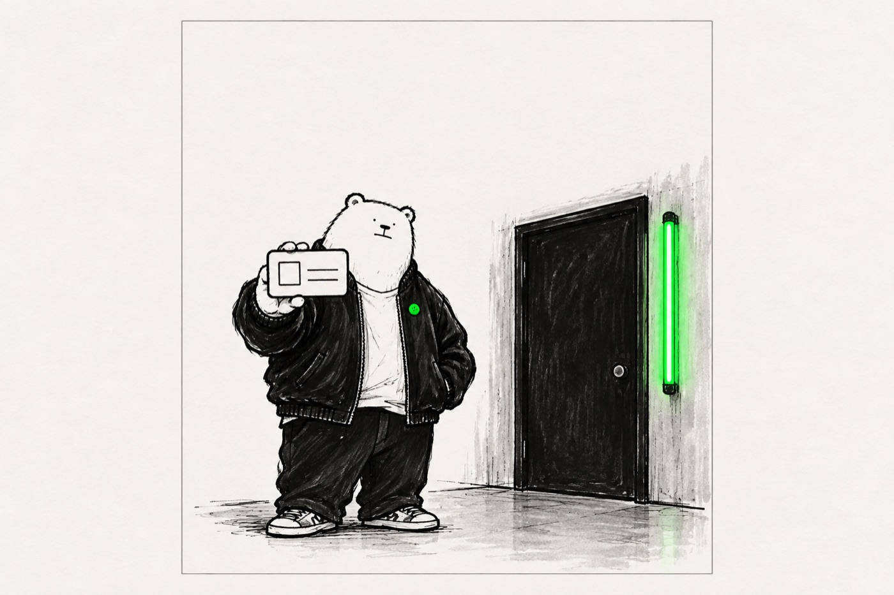
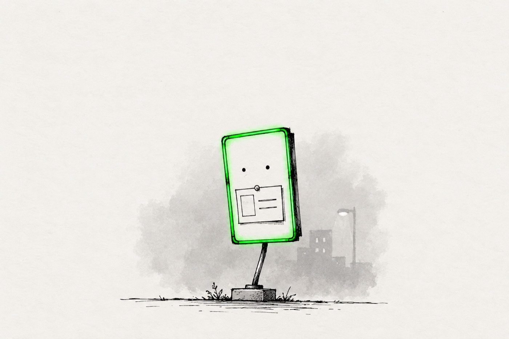
대조군 · 사람 운영 크루 W1 10/2에 추천됐던 안. 같은 그림체로 그려 비교용으로 둡니다.
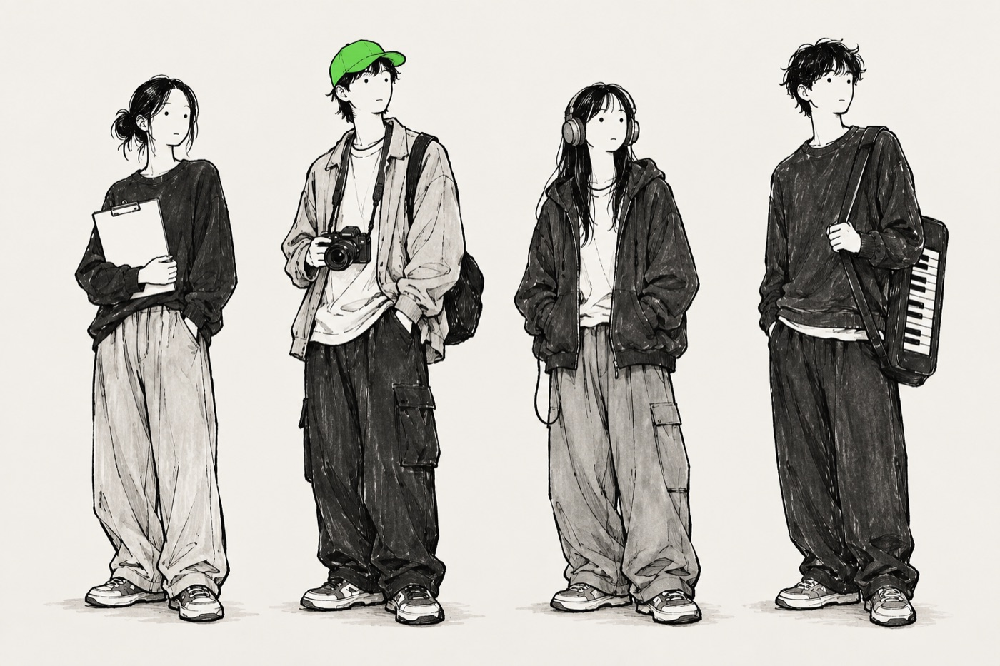
- 왜 보류
- 가상 창작자를 지어내면 "진짜 협업 흔적" 약속과 부딪히고, 디자이너 1명이 얼굴 4개를 매주 감당하기 어렵다. 블라인드 시험에서 이 안이 저장·공유 2배 이상 앞서면 돌아온다.
미확인 5건, 확인 결과 결정을 뒤집는 발견은 없었습니다. 둘은 원문으로 확정, 셋은 일부만 좁혀졌습니다.
| 미확인이었던 것 | 이제 말할 수 있는 것 | 여전히 미확인 |
|---|---|---|
| 그림·동물형 캐릭터가 인스타 AI 라벨 대상인가 | 원문 확정 라벨 대상은 "AI로 생성한 사람(AI-generated person)". 제작 과정에서 AI 도구만 쓰면 라벨 불필요. 자발 부착 시 도달 불이익 없음. 손그림 비사람 캐릭터는 문언상 대상이 아니다. | 도움말 본문, AI로 생성한 비사람 캐릭터의 처리, 자동 탐지 오탐 빈도. 그래서 공개용 원화는 디자이너가 그리고 생성형 편집은 쓰지 않는다. |
| 20대가 '클럽'을 무엇으로 먼저 읽나 | 부분 공급 쪽에서는 '○○클럽 = 멤버십·모임' 용법이 20대 상품에도 정착(KB 유스 클럽 18~29세 체크카드 1위, 민음사 북클럽 1시간 1만 명, 트레바리 12만). '입뺀'은 일상어(2026 기사 4계열). | 20대의 첫 연상을 직접 물은 조사 0건. 문지기 안은 시험에 "위축감·소외감" 문항을 넣는다. |
| 창작자 서비스의 캐릭터 화자 선례 | 부분 Dribbble·Behance·Figma·Canva·Patreon·노트폴리오 등 17계정 bio 기준 캐릭터 화자는 확인된 곳 없음. 가장 가까운 건 Duolingo(학습)와 카카오프렌즈(IP). | 프로필 사진·게시물 화자, 한국 서비스 공식 핸들 8곳. 선례가 없는 건 차별점일 수도, 시장이 원치 않는 방식일 수도 있다. |
| 가상인간 2026 현황 · 'AI 직원' 계정 선례 | 얇음 사람처럼 보이는 AI 배우(Tilly Norwood)에 배우 노조 반발, Duolingo 'AI 우선' 역풍은 확인. 'AI 직원' 공개 계정 선례는 0건. | 로지·이솔·한유아 2026 현황, 김햄찌 논란 여부. 검색 한도로 미완 — 결정 근거로는 라벨·법 원문이 충분하다. |
| AI 기본법 제31조·시행령·공정위 가상인물 지침 | 원문 확정 표시 의무 주체는 "인공지능사업자"(제공자)뿐이고, 콘텐츠를 만드는 쪽은 '이용자'라 의무 없음(과기정통부 FAQ 원문). 제31조③과 공정위 지침 Ⅴ.5(2026-06-01 신설)는 "실제와 구분하기 어려운" 인물에 한정. 과태료는 시정명령 불이행 때만, 계도기간 최소 1년. | 투명성 가이드라인 전문, 계도기간 종료일. 법률 자문이 아닌 조문 해석. 캐릭터가 특정 멤버 작업을 "추천"하는 문구를 쓰면 지침을 다시 본다. |
샐리가 누를 결정 하나입니다.
규칙 세 줄로 첫 10편을 쓸까요?
가면 10편의 '카메라를 보는 사람'(실제 멤버 섭외 후보)과 캡션 10줄을 바로 써 옵니다. 꾸벅·톡 같은 캐릭터 결정은 폐기합니다 — 정체를 정하지 않으니까요.
이 시안의 한계
- 그림 27장은 Codex image_gen 러프(1536×1024)이고 디자이너 원화가 아닙니다. 얼굴·선의 완성도가 아니라 '역할과 느낌'만 보는 용도입니다.
- 그린 캐릭터 하나가 팔로워 0에서도 정을 붙인다는 전제는 검증 전입니다. Duo·빙그레우스는 이미 알려진 브랜드 위에서 컸습니다.
- 리서치 2갈래는 웹 검색 한도로 일부를 못 채웠습니다(가상인간 2026 현황, 창작자 서비스 프로필 사진).